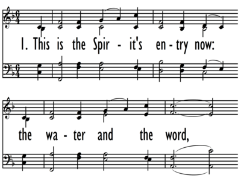
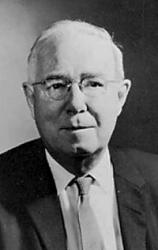

|
|
420藉水與道印記 |
|
1 This is the Spirit's entry now: 2 This miracle of life reborn 3 Let water be the sacred sign 4 Renewing Spirit, hear our praise
|
|
|
 |
|
|
|
|
| Text: | This is the Spirit's Entry Now |
| Author: | Thomas E. Herbranson, b. 1933 |
| Tune: | PERRY |
| Composer: | Leo Sowerby, 1895-1968 |
Tune Information
| Title: | PERRY (Sowerby) |
| Composer: | Leo Sowerby (1962) |
| Meter: | 8.6.8.6 |
| Incipit: | 17123 45336 5345 |
| Key: | E♭ Major |
| Copyright: | Music Copyright © 1964 by Abingdon Press. |
| Short Name: | Leo Sowerby |
| Full Name: | Sowerby, Leo, 1895-1968 |
| Birth Year: | 1895 |
| Death Year: | 1968 |
Leo Sowerby (1895-1968) was born in Grand Rapids and studied at the American Conservatory of Music, Chicago (M.A. 1918). He served as regimental bandmaster with the 332nd Field Artillery Band in both England and France (1917-1919). He became the first fellow of the American Academy in Rome, where he studied for three years. He participated in the Salzburg Festival for Contemporary Music in 1923. From 1924 to 1963 he was on the faculty of the American Conservatory. He also was organist and choirmaster of St. James Church (1927-1963). Sowerby had an interest in folk music which he turned into wonderful compositions. He won a Pulitzer Prize for his Canticle of the Sun (1946). He died at Port Clinton, Ohio.
--Presbyterian Hymnal Companion

Thomas E. Herbranson 1933-2009
HERBRANSON, Thomas Edmond.
b. Bagley, Minnesota, 3 December 1933. Herbranson graduated from St Olaf College, Northfield, Minnesota (BA 1955), and Luther Theological Seminary (BD 1960, MTh 1970). He served as a campus pastor at Winona State College, Minnesota (1960-62), and at a home mission church at White Bear Lake, Minnesota (1963-67). From 1967-69 he served in Mexico City in a bilingual church for the poor, and worked with Americans at Guadalajara and Cuernavaca and poor Mexicans in San Fernando (Westermeyer, 2010, p. 273). Herbranson worked in public relations for the Lutheran Brotherhood Insurance Company in Minneapolis beginning in 1971, as well as for the governor of Minnesota
https://hymnology.hymnsam.co.uk/t/thomas-e-herbranson